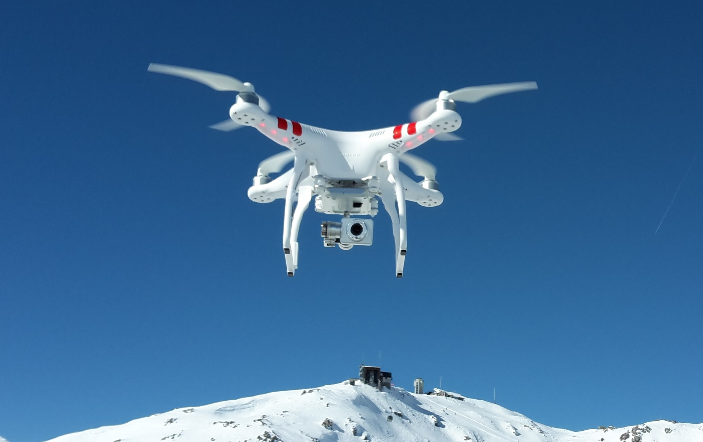

제안 개요


본 제안은 포천시의 지리적 강점과 기존 자원을 효율적으로 활용하여 최소한의 예산으로 드론 산업 생태계를 단계적으로 구축하는 전략을 제시합니다. 한탄강 유역의 자연환경, 넓은 개활지, 그리고 군사훈련장 등 포천의 고유 자원을 활용해 드론 테스트 및 활용 거점으로 발전시키고, 드론 산업을 중심으로 연관 일자리 창출과 지역경제 활성화를 도모합니다.
"빠른 성과, 적은 투자"를 원칙으로 하여 가시적인 성과를 단기간에 창출하는 동시에, 장기적으로는 포천을 드론 산업의 중심지로 육성하는 비전을 담고 있습니다.
#드론산업
#지역경제활성화
#단계적접근
#포천특화전략
#자원활용
단계별 접근 전략
드론 친화 환경 조성
2025-2026년
- 드론 자유 비행구역 지정 및 운영
- 드론 문화 확산 및 인지도 구축
- 드론 기초 인프라 구축
1
준비 및 기반 구축 단계
포천의 지리적 특성을 활용한 드론 비행환경 조성과 기초 인프라 구축으로 산업 생태계의 토대를 마련합니다.
성장 및 역량 확보 단계
드론 관련 인재 양성과 스타트업 지원을 통해 산업 생태계의 역량을 강화하고 성장 기반을 다집니다.
2
드론 산업 역량 강화
2026-2027년
- 드론 활용 인재 육성 프로그램
- 드론 스타트업 인큐베이팅 시스템
- 지역 특화 드론 응용 모델 개발
드론 산업 생태계 고도화
2027-2029년
- 포천 드론밸리 조성
- 드론 연구개발 역량 강화
- 드론 활용 공공서비스 혁신
3
확장 및 고도화 단계
드론 산업 클러스터 조성과 연구개발 역량 강화를 통해 포천을 드론 산업의 중심지로 발전시킵니다.
기대효과 요약
0+
드론 관련 기업 유치
0+
신규 일자리 창출
0억
경제 효과
0%
GRDP 성장률
경제적 효과
- 2030년까지 드론 관련 기업 70개 이상 유치 및 육성
- 드론 관련 신규 일자리 1,000개 이상 창출
- 연간 2,000억원 이상 경제효과 기대
사회적 효과
- 청년 인구 유입 및 정착으로 인구구조 개선
- 드론 기반 공공서비스 혁신 및 안전 강화
- 지역 공동체 활성화 및 삶의 질 향상
페이지 이동
보다 자세한 내용은 각 섹션별 페이지를 참조하시기 바랍니다.